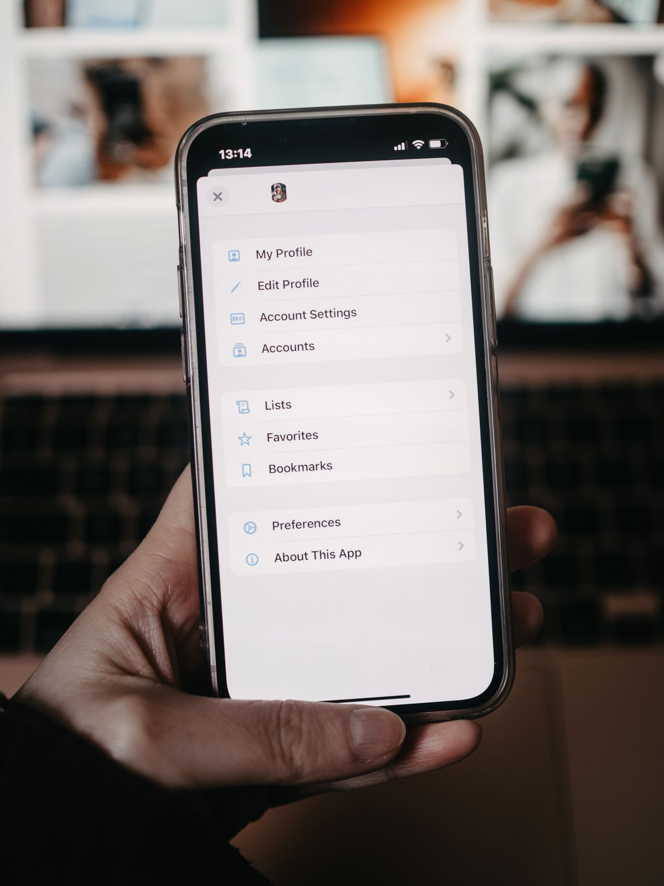
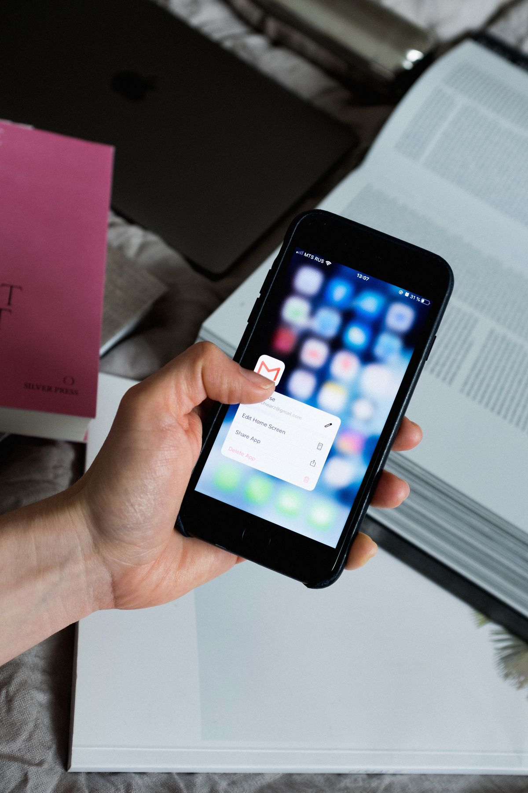

Buka WhatsApp, masuk ke Pengaturan, pilih Akun, ketuk Verifikasi dua langkah, lalu ketuk Aktifkan. Buat kata sandi yang kuat dan konfirmasi, lalu isi alamat email aktif supaya kata sandi bisa direset kalau lupa. Siapa pun yang mencoba mendaftarkan nomormu di HP lain wajib memasukkan kata sandi itu, jadi kode SMS yang bocor saja tidak cukup buat mengambil alih akunmu.
Verifikasi dua langkah adalah kunci kedua untuk akun WhatsApp kamu. Tanpa fitur ini, siapa pun yang mendapatkan kode SMS pendaftaran bisa langsung masuk ke akunmu di HP lain, lalu menyamar jadi kamu buat menipu kontakmu. Dengan fitur ini aktif, pendaftar baru wajib memasukkan kata sandi atau PIN yang hanya kamu yang tahu. Per November 2026, WhatsApp sedang mengganti PIN enam digit lama menjadi kata sandi penuh, minimal delapan karakter dengan huruf dan angka, yang lebih sulit ditebak daripada enam angka. Kamu juga diminta mengisi alamat email pemulihan saat mengaktifkan, karena tanpa email, kata sandi yang lupa baru bisa direset sesudah menunggu tujuh hari. Pengaturan ini gratis dan tidak butuh aplikasi tambahan.
Apa itu verifikasi dua langkah WhatsApp?
Saat pertama kali memasang WhatsApp, kamu diminta memasukkan kode enam digit yang dikirim lewat SMS. Kode itu satu-satunya kunci. Kalau ada orang yang berhasil mendapatkan kode itu, misalnya lewat penipuan atau SIM yang disalahgunakan, ia bisa langsung masuk ke akunmu. Verifikasi dua langkah menambahkan kunci kedua: kata sandi atau PIN yang kamu buat sendiri. WhatsApp akan memintanya setiap kali nomormu didaftarkan di perangkat baru, dan sesekali memintanya di HP-mu sendiri supaya kamu tidak lupa. Fitur ini bawaan WhatsApp, gratis, dan tidak butuh aplikasi tambahan. Ia tidak mengunci chat harianmu, hanya menjaga pintu masuk akun.
Bagaimana cara mengaktifkan verifikasi dua langkah WhatsApp?
Langkahnya sama di Android dan iPhone, hanya letak tombol Pengaturan yang beda sedikit.
- Buka WhatsApp di HP-mu.
- Di Android, ketuk ikon tiga titik di pojok kanan atas, lalu pilih Pengaturan. Di iPhone, ketuk Pengaturan di bilah bawah.
- Pilih Akun, lalu ketuk Verifikasi dua langkah.
- Ketuk Aktifkan, lalu buat kata sandi yang kuat dan ketik dua kali buat konfirmasi. Kalau HP-mu masih menampilkan PIN enam digit, isi enam angka yang sama dua kali, karena pembaruan kata sandi masih digulirkan bertahap.
- Masukkan alamat email yang masih bisa kamu buka, lalu ketuk Lanjut. Jangan ketuk Lewati, karena email ini satu-satunya jalan reset kalau kamu lupa kata sandi.
- Terakhir, ketuk Percayai perangkat ini kalau HP itu memang HP harianmu, atau Lewati kalau kamu tidak mau.
Buat kata sandi yang panjang dan tidak mudah ditebak: campur huruf dan angka, minimal delapan karakter, dan jangan pakai tanggal lahir atau urutan 123456.

Kenapa PIN enam digit berubah jadi kata sandi?
Per November 2026, WhatsApp sedang mengganti PIN enam digit verifikasi dua langkah menjadi kata sandi penuh. Kata sandi boleh berisi huruf, angka, dan karakter khusus, dan minimal delapan karakter dengan setidaknya satu huruf dan satu angka. Enam angka hanya punya kombinasi terbatas, jadi kata sandi yang panjang jauh lebih sulit ditebak. Pembaruan ini digulirkan bertahap ke Android dan iPhone, jadi jangan heran kalau HP temanmu sudah menampilkan kolom kata sandi sementara HP-mu masih minta PIN. Kalau kamu masih memakai PIN lama, WhatsApp akan menawarkan untuk menggantinya: buka Pengaturan, pilih Akun, ketuk Verifikasi dua langkah, lalu pilih Ubah. Selama tawaran itu belum muncul, PIN enam digit yang kuat tetap jauh lebih baik daripada tidak memakai verifikasi dua langkah sama sekali.
Bagaimana kalau lupa kata sandi verifikasi dua langkah?
Jangan panik, dan jangan instal ulang WhatsApp, karena instal ulang tidak menghapus kata sandi ini. Kalau kamu mengisi email pemulihan saat mengaktifkan, jalan keluarnya cepat. Saat WhatsApp meminta kata sandi, ketuk Lupa PIN? atau Verifikasi dengan cara lain, lalu pilih email. WhatsApp mengirim tautan reset ke emailmu, ikuti tautan itu buat menonaktifkan verifikasi dua langkah, lalu aktifkan lagi dengan kata sandi baru. Kalau kamu tidak mengisi email, atau email itu sudah tidak bisa dibuka, kamu harus menunggu tujuh hari. Masa tunggu ini dihitung sejak terakhir akunmu tersambung ke WhatsApp, dan tidak ada jalan pintas: dukungan WhatsApp pun tidak bisa mempercepatnya. Sesudah tujuh hari, pilihan reset akun baru muncul, dan reset itu tidak bisa dibatalkan. Karena itu, isi email pemulihan sejak awal jauh lebih mudah daripada menunggu seminggu tanpa WhatsApp.

WhatsApp tiba-tiba minta PIN padahal kamu tidak pernah mengaturnya, apa artinya?
Ini tanda bahaya. Kalau kamu tidak pernah mengaktifkan verifikasi dua langkah tapi WhatsApp tiba-tiba meminta PIN saat kamu mendaftar ulang, ada kemungkinan seseorang sudah mencoba mendaftarkan nomormu di HP lain dan mengaktifkan fitur itu duluan. Jangan pernah membagikan kode SMS enam digit ke siapa pun, termasuk orang yang mengaku dari WhatsApp atau dari bank. WhatsApp tidak pernah meminta kode itu lewat chat atau telepon. Amankan akunmu sekarang juga: aktifkan verifikasi dua langkah dengan kata sandi dan emailmu sendiri, lalu periksa perangkat yang tertaut lewat Pengaturan, Perangkat tertaut, dan keluarkan perangkat yang tidak kamu kenali.
Verifikasi dua langkah adalah pengaman gratis yang sekali diaktifkan terus melindungimu selama kamu memakai nomor itu. Aktifkan sekarang, isi email pemulihan, dan simpan kata sandinya di tempat yang aman. Akun yang terkunci rapat tidak menarik buat pembajak. WhatsApp juga terus menambah fitur baru, jadi ada baiknya kamu cek fitur baru WhatsApp 2026 yang sudah rilis di grup.
Baca juga: Cara Mengunci Aplikasi di HP Android dan iPhone, Tanpa Aplikasi Tambahan, biar chat WhatsApp-mu tidak dibuka orang yang meminjam HP-mu. Kamu juga bisa melihat daftar artikel Other dan artikel riset di blog.
Sumber dan Info Resmi
Fakta dan angka di artikel ini merujuk ke sumber berikut:
- Pusat Bantuan WhatsApp: Cara mengelola pengaturan verifikasi dua langkah: langkah mengaktifkan lewat Pengaturan, Akun, Verifikasi dua langkah, Aktifkan; PIN enam digit sedang beralih menjadi kata sandi; isi email atau Lewati; pilihan Percayai perangkat ini; cara menonaktifkan; cara menambah dan mengubah email.
- erafone: Mengatur Konfigurasi WhatsApp: langkah mengaktifkan verifikasi dua langkah dan pernyataan WhatsApp mulai mengalihkan PIN enam digit ke sistem kata sandi.
- mughu.id: Cara Mengaktifkan Passkey WhatsApp: kata sandi penuh menggantikan PIN enam digit, boleh berisi huruf, angka, dan karakter khusus; pembahasan CNBC Indonesia 2 November 2026; rollout bertahap untuk Android dan iOS.
- webdimensions.ma: WhatsApp Two-Step Verification Code Forgotten: kata sandi minimal 8 karakter dengan huruf dan angka; lupa kata sandi tanpa email harus menunggu 7 hari; pilihan reset akun tidak bisa dibatalkan.
- Kalam Times: Forgot Your WhatsApp PIN? Here Is How to Recover Access to Your Account Safely: reset lewat email dengan mengetuk Lupa PIN? lalu kirim email; tanpa email harus menunggu 7 hari; instal ulang WhatsApp tidak menghapus PIN.